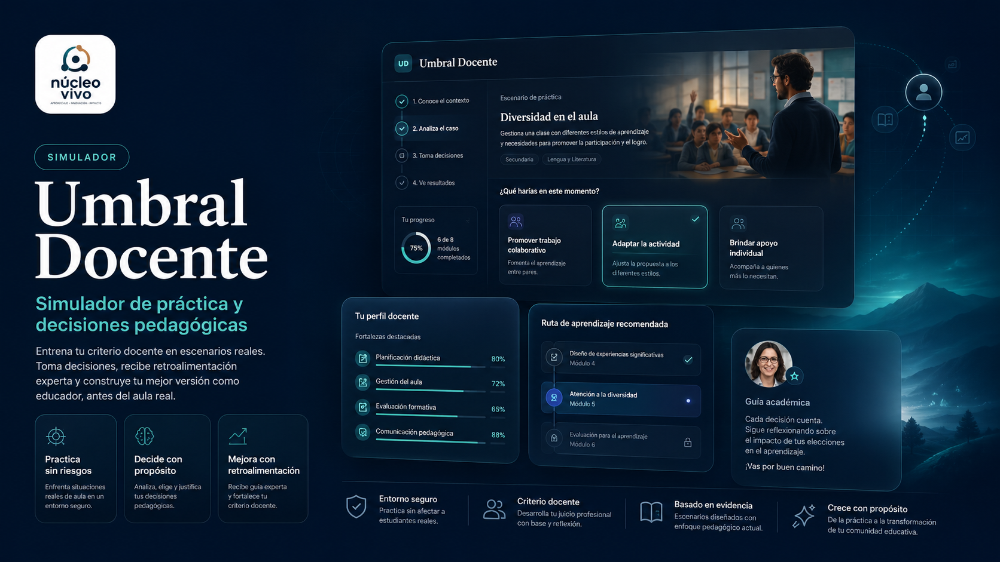

Comprender
Distingue hechos, hipótesis, contexto y señales observables.

Formación docente · práctica pedagógica
Observa situaciones audiovisuales de sala cuna, nivel medio y transición. Fundamenta tus decisiones y reflexiona sobre la práctica pedagógica.

El simulador reúne 65 videos de situaciones ficticias de primera infancia. Cada recorrido permite observar evidencias, planificar una respuesta y revisar su fundamento pedagógico.
Todos los personajes y escenarios son ficticios. Umbral Docente apoya el aprendizaje deliberado y no reemplaza la práctica supervisada ni el juicio docente situado.
Cinco movimientos dentro de la aplicación oficial.
Distingue hechos, hipótesis, contexto y señales observables.
Define propósito, experiencia, apoyo, adaptación y evidencia.
Formula tu intervención y contrasta sus fundamentos con las evidencias del caso.
Analiza efectos, revisa decisiones y proyecta el próximo ensayo.
Ingresa con tu correo y contraseña habituales de Escucha Viva; tu cuenta debe estar asignada a Umbral. Trabaja con los casos ficticios, sin incorporar datos personales de niñas, niños u otras personas. Los puntajes son orientadores, no certifican competencias profesionales y el piloto no constituye una evaluación académica oficial.
Explorar la ruta completa